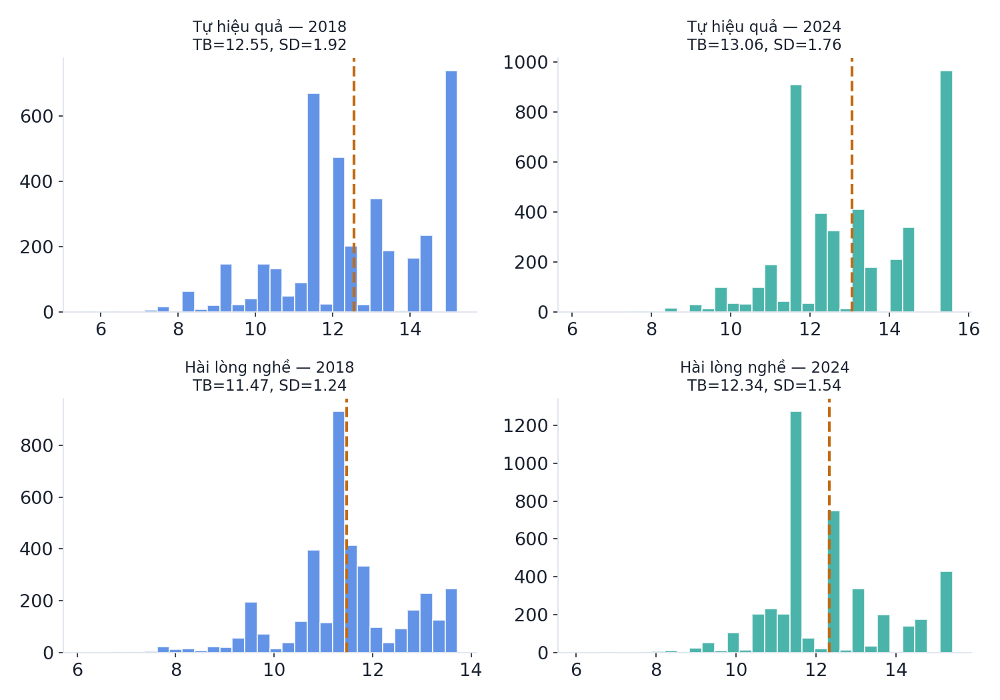
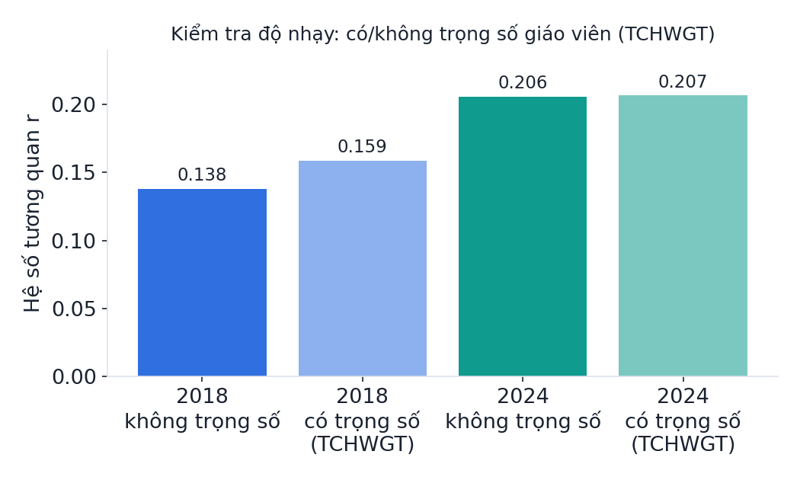
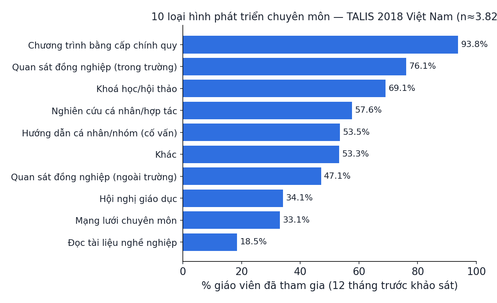
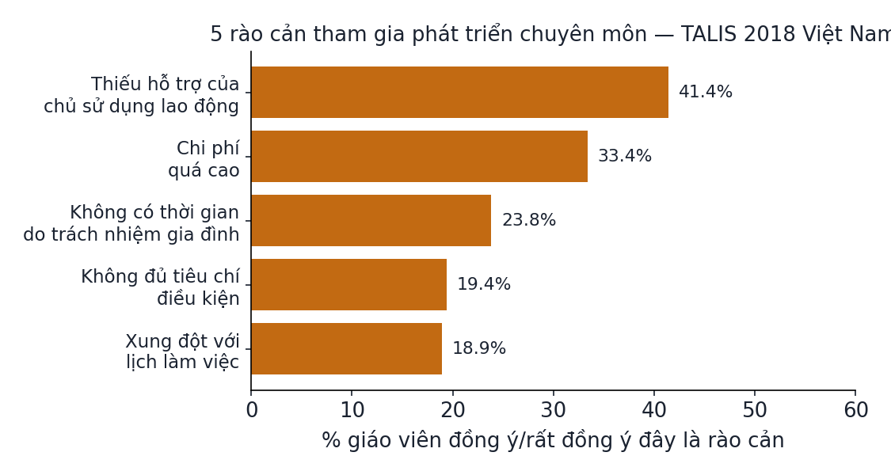

Module VKL 18-10 · Đề tài tiểu luận cá nhân — So sánh TALIS 2018 & 2024
Module phụ lục, soạn RIÊNG cho Vũ Khánh Linh sau khi Linh gửi 2 đề cương đề tài (De_xuat_de_tai_so_sanh_TALIS_2018_2024.docx và De_cuong_TALIS2018_Phat_trien_chuyen_mon...docx) và 3 câu hỏi đặt ra trong lúc tự chạy SPSS. Toàn bộ số liệu dưới đây lấy từ dữ liệu TALIS 2018 & 2024 THẬT đã tải trực tiếp từ OECD, chạy bằng Python (pandas/scipy) và đối chiếu khớp hoàn toàn bằng PSPP — không có số nào bịa ra hay lấy từ báo cáo OECD thay cho kết quả tự chạy. Cập nhật 21/10/2026: Linh đã chốt đổi sang Đề tài B làm bài cá nhân — xem Phần 5 của slide deck và mục 3bis bên dưới. Không nằm trong 12 module chính của khoá SPSS.
1. Bối cảnh, câu hỏi nghiên cứu & giả thuyết
Linh gửi 2 đề cương cùng lúc. Đề tài A ("So sánh mối liên hệ giữa tự hiệu quả trong giảng dạy và sự hài lòng với nghề giáo của giáo viên THCS Việt Nam: phân tích TALIS 2018 và 2024") so sánh ĐỘ MẠNH của một mối liên hệ giữa hai thời điểm. Đề tài B ("Mối liên hệ giữa tham gia phát triển chuyên môn, tự hiệu quả giảng dạy và rào cản tham gia ở giáo viên THCS Việt Nam: phân tích TALIS 2018") chỉ dùng một chu kỳ nhưng có 3 biến (CPD_COUNT, T3SELF, T3PDBAR). Linh nhắn rõ "đang nghiêng về đề tài so sánh hơn" — module này chạy thật đề tài A; đề tài B vẫn khả thi với cùng mức độ nếu Linh muốn đổi ý sau, báo lại để chạy tiếp.
| Mã | Giả thuyết | Cách kiểm tra | Kết quả thật (xem Phần 3) |
|---|---|---|---|
| H1a | Năm 2018, tự hiệu quả giảng dạy tương quan thuận với hài lòng nghề | r2018 > 0 | r=0,138, p<0,001 — ĐƯỢC ủng hộ |
| H1b | Năm 2024, tự hiệu quả giảng dạy tương quan thuận với hài lòng nghề | r2024 > 0 | r=0,206, p<0,001 — ĐƯỢC ủng hộ |
| H2 | Độ mạnh 2 mối tương quan khác nhau giữa 2018 và 2024 (hai phía) | So sánh r2018 với r2024 | Δr=0,068, z=3,16, p=0,0016 — khác biệt có ý nghĩa (kiểm tra sơ bộ) |
2. Dữ liệu thật đã tải & biến số
Hai tệp Public Use File (PUF) chính thức tải trực tiếp từ OECD trong phiên làm việc này, không dùng số liệu giả định:
| Tệp | Nguồn | Kích thước đã xác nhận | Ghi chú |
|---|---|---|---|
| TALIS 2018 — giáo viên ISCED2 quốc tế | webfs.oecd.org/talis/SPSS_2018_international.zip → BTGINTT3.sav | 192.079.684 byte (ZIP) → 251.214.493 byte (.sav), khớp đúng Content-Length server trả về | Chữ "B" trong tên file = ISCED2 (B=THCS, A=tiểu học, C=THPT) — OECD đã TÁCH SẴN theo cấp học trong tệp quốc tế, không cần tự lọc cấp học |
| TALIS 2024 — giáo viên Việt Nam ISCED2 | TALIS2024_teachers_NoESE_SPSS.zip → btgvnmt4_giaovien_ISCED2.sav | 21.438.556 byte, 611 biến | Đã lọc sẵn Việt Nam từ tệp quốc gia OECD cấp riêng |
| Khái niệm | Biến 2018 | Biến 2024 | Vai trò |
|---|---|---|---|
| Tự hiệu quả trong giảng dạy | T3SEINS | T4SEINS | Thang năng lực bản thân do OECD xây dựng sẵn — dùng trực tiếp, không tự cộng lại mục con |
| Hài lòng với nghề giáo | T3JSPRO | T4JSPROT | Thang hài lòng với nghề dạy học — khác thang hài lòng môi trường làm việc |
| Trọng số giáo viên | TCHWGT | TCHWGT | Trọng số cuối cấp giáo viên, dùng cho ước lượng điểm đại diện tổng thể (xem Phần 3, kiểm tra độ nhạy) |
CNTRY="VNM" trên tệp 2018 cho đúng 3.825 giáo viên. Tệp 2024 đã lọc sẵn Việt Nam, cho đúng 4.348 — khớp CHÍNH XÁC con số "4.348 giáo viên ISCED 2" mà chính đề cương của Linh đã trích dẫn từ bảng kỹ thuật OECD. Đây là bằng chứng mạnh nhất cho thấy quy trình lọc mẫu ở đây đúng.3. Kết quả phân tích thật (đã verify bằng Python + PSPP)
| Chu kỳ | N sau lọc VNM | N hợp lệ T·SEINS | N hợp lệ T·JSPRO | Mean T·SEINS (SD) | Mean T·JSPRO (SD) |
|---|---|---|---|---|---|
| TALIS 2018 | 3.825 | 3.818 | 3.818 | 12,55 (1,92) | 11,47 (1,24) |
| TALIS 2024 | 4.348 | 4.347 | 4.348 | 13,06 (1,76) | 12,34 (1,54) |
Cả hai trung bình năm 2024 đều cao hơn 2018 (thang đo WLE/IRT của OECD có thể đã chuẩn hoá lại một phần giữa 2 chu kỳ) — KHÔNG diễn giải đây là "giáo viên tiến bộ hơn qua thời gian", vì là 2 mẫu độc lập khác nhau.
| Chu kỳ | N hợp lệ (cặp) | r (tự hiệu quả–hài lòng) | p | Diễn giải |
|---|---|---|---|---|
| 2018 | 3.812 | 0,138 | <0,001 (1,23×10⁻¹⁷) | Thuận, YẾU |
| 2024 | 4.347 | 0,206 | <0,001 (8,15×10⁻⁴³) | Thuận, YẾU–gần VỪA |
| So sánh | Hai mẫu độc lập | Δr=0,206−0,138=0,068 | z=3,16; p=0,0016 (Fisher r-to-z, sơ bộ) | Khác biệt có ý nghĩa ở mức kiểm tra sơ bộ |


- zrbiến đổi Fisher của hệ số tương quan r, giúp phân phối gần chuẩn hơn để so sánh
- n₁, n₂cỡ mẫu hợp lệ của từng chu kỳ (3.812 và 4.347)
- zthống kê kiểm định — |z|>1,96 thì khác biệt có ý nghĩa ở α=0,05
Tính tay: zr2018=0,1387, zr2024=0,2088, SE=√(1/3809+1/4344)=0,0222 → z=(0,2088−0,1387)/0,0222=3,16 → p=0,0016. Đã verify khớp giữa Python (scipy.stats.norm) và tính tay trực tiếp.
3bis. Đề tài B — ĐÃ TRỞ THÀNH lựa chọn chính của Linh cho bài cá nhân (chốt 21/10)
Cập nhật 21/10/2026: Linh xác nhận sẽ dùng Đề tài B (phát triển chuyên môn, tự hiệu quả, rào cản) để viết bài cá nhân, thay vì Đề tài A. Toàn bộ số liệu dưới đây đã chạy thật trên cùng tệp TALIS 2018 Việt Nam, verify kép Python + PSPP. Lưu ý quan trọng: đề tài B dùng biến T3SELF ("Teacher self-efficacy, overall" — thang tự hiệu quả TỔNG QUÁT), KHÁC với T3SEINS ("self-efficacy in instruction" — chỉ riêng khía cạnh giảng dạy) dùng ở đề tài A. Hai biến này không thay thế cho nhau.
| Biến | N hợp lệ | Mean | SD |
|---|---|---|---|
| CPD_COUNT (0-10 loại hình) | 3.629 | 5,39 | 2,41 |
| T3SELF (tự hiệu quả tổng quát) | 3.818 | 12,65 | 1,60 |
| T3PDBAR (rào cản tham gia) | 3.817 | 9,23 | 2,13 |
| Giả thuyết | Pearson r | Spearman ρ | Pearson r CÓ trọng số TCHWGT | p | Kết luận |
|---|---|---|---|---|---|
| H1: CPD_COUNT ↔ T3SELF | 0,163 | 0,170 | 0,171 | <0,001 | Thuận, YẾU — ĐƯỢC ủng hộ |
| H2: T3PDBAR ↔ CPD_COUNT | −0,091 | −0,108 | −0,091 | <0,001 | Nghịch, RẤT YẾU — ĐƯỢC ủng hộ (yếu) |
| H3 (thăm dò): T3PDBAR ↔ T3SELF | −0,145 | −0,155 | −0,152 | <0,001 | Nghịch, YẾU |
Cả 3 kết quả đã verify khớp giữa Python và PSPP (dùng đúng syntax DO REPEAT/RECODE trong đề cương gốc).


3ter. Nhận xét file SPSS Linh tự gửi (21/10) — Output1 check du lieu.spv
File .spv thực chất là file ZIP (mở được bằng unzip, không cần SPSS) chứa log lệnh dạng XML + bảng kết quả dạng nhị phân. Đọc trực tiếp log lệnh bên trong cho biết chính xác Linh đã làm gì, theo đúng thứ tự:
GET FILE='...SPSS_2018_national\BTGVNMT3.sav'— Linh dùng tệp TALIS 2018 Việt Nam đã lọc sẵn cấp quốc gia (khác tệp quốc tế 47 nước nhóm mình tải), đặt tênDataSet2.DESCRIPTIVES VARIABLES=T3SELF T3PDBAR TCHWGT— mô tả đúng 3 biến chính của Đề tài B.FREQUENCIEShàng loạt trên 10 mục hoạt động PD (TT3G22A-J) và 7 mục rào cản (TT3G28A-G) — đúng các biến thành phần đề cương yêu cầu.- Tự viết đúng cú pháp
COUNT CPD_COUNT=...(1). IF (NVALID(...)<10) CPD_COUNT=$SYSMIS. VARIABLE LABELS...— khớp CHÍNH XÁC công thức trong đề cương gốc, không chép sai một dấu nào. NONPAR CORR /VARIABLES=CPD_COUNT T3SELF T3PDBAR /PRINT=SPEARMAN TWOTAIL NOSIG FULL /MISSING=PAIRWISE— đúng phép kiểm tra độ nhạy Spearman đã làm ở mục 3bis.
.bin riêng, không phải văn bản đọc thẳng được — nhóm mình đọc được cấu trúc bảng/tên biến nhưng KHÔNG trích được chính xác con số rho/p mà không rủi ro đọc sai byte, nên không tự đoán số. Nếu muốn đối chiếu chính xác, Linh chụp màn hình bảng Correlations cuối cùng gửi lại.File còn có 1 bảng Linh dán sẵn vào (mục TT3G28C — "There is a lack of employer support"): đây chính là dạng bảng MẶC ĐỊNH của SPSS Output Navigator — nền xám sọc ngựa vằn, font Arial, không màu, không bo góc. Đây là nguồn gốc câu hỏi "làm sao ra bảng đẹp" Linh hỏi 21/10 — bảng này KHÔNG sai số liệu, chỉ là định dạng mặc định chưa chỉnh.
- Trong SPSS Output Navigator: double-click bảng → Format → TableLooks (hoặc chuột phải → Edit Content → TableLook), chọn mẫu có sẵn (vd "Academic", "Box") thay vì mặc định.
- Nhanh hơn: copy bảng, dán trực tiếp vào Word, áp một Table Style có sẵn của Word — không cần sửa gì trong SPSS.
4. Trả lời đầy đủ 3 câu hỏi Linh đặt ra khi tự chạy SPSS
Câu hỏi 1 — "Quy mô của đề tài so sánh này có nhỏ quá không?"
Câu hỏi 2 — "Cần kiểm chứng tôi đã chạy đúng dữ liệu chưa, kết quả ra đúng chưa?"
Output1 check du lieu.spv) trên đúng quy trình Đề tài B — đọc log lệnh bên trong file xác nhận Linh viết đúng cú pháp COUNT CPD_COUNT=...(1). IF (NVALID(...)<10) CPD_COUNT=$SYSMIS. và chạy đúng NONPAR CORR /VARIABLES=CPD_COUNT T3SELF T3PDBAR /PRINT=SPEARMAN — khớp chính xác với đề cương gốc, không sai cú pháp. N kiểm qua bảng rào cản (TT3G28C) = 3.825, khớp đúng số Vietnam đã dùng xuyên suốt.- Sau khi lọc
CNTRY="VNM"trên tệp 2018 (BTGINTT3.sav), N phải ra đúng 3.825. Nếu ra số khác xa, kiểm tra lại đã dùng đúng biếnCNTRY(chuỗi "VNM") chứ không phảiIDCNTRY(mã số). - CPD_COUNT (sau COUNT + IF NVALID<10 → sysmis) phải ra N hợp lệ 3.629, mean≈5,39, SD≈2,41. T3SELF: N=3.818, mean≈12,65. T3PDBAR: N=3.817, mean≈9,23.
- H1 (CPD_COUNT↔T3SELF) r phải quanh +0,16; H2 (T3PDBAR↔CPD_COUNT) r phải quanh −0,09; H3 (T3PDBAR↔T3SELF) r phải quanh −0,15 — cả ba đều YẾU/RẤT YẾU, không nên ra con số "mạnh" (|r|>0,3); nếu ra mạnh hơn hẳn, khả năng cao đã nhầm biến hoặc quên lọc quốc gia.
- Nếu muốn kiểm tra thêm một bước nữa (không bắt buộc): áp
WEIGHT BY TCHWGTtrước khi chạy lại CORRELATIONS — kết quả không nên lệch quá 0,01 so với không trọng số (xem bảng 3bis). - Với tệp 2024 nếu Linh vẫn muốn giữ phần so sánh đề tài A làm tham khảo: N sau khi lọc quốc gia + ISCED2 phải ra đúng 4.348 (số OECD đã xác nhận); r2018 quanh 0,138, r2024 quanh 0,206.
- Luôn kiểm tra N báo trong bảng Correlations của SPSS — nếu N quá thấp so với N sau lọc quốc gia, có nghĩa 1 trong 2 biến có nhiều missing hơn dự kiến, cần xem lại Frequencies trước khi tin con số r.
Câu hỏi 3 — "Bước tiếp theo... cần dùng đúng thuật ngữ để viết vào bài"
| Viết ĐÚNG | Tránh viết | Vì sao |
|---|---|---|
| "có mối liên hệ/tương quan thuận" | "tự hiệu quả làm tăng/ảnh hưởng tới hài lòng" | Dữ liệu tương quan cắt ngang không xác lập được chiều nhân quả |
| "hai mẫu giáo viên cắt ngang độc lập ở hai thời điểm" | "giáo viên đã thay đổi/tiến bộ qua thời gian" | TALIS không theo dõi lại cùng giáo viên — mỗi chu kỳ là một mẫu khác nhau |
| "hệ số tương quan Pearson r=... (n=...)" | chỉ nói "có liên hệ" mà không kèm số | Luôn báo kèm r, p, và N hợp lệ — thiếu N là thiếu thông tin quan trọng để người đọc đánh giá độ tin cậy |
| "kiểm tra sơ bộ bằng SPSS cơ bản, chưa xử lý trọng số lặp BRR theo thiết kế mẫu" | khẳng định p-value đại diện chính xác cho toàn bộ tổng thể giáo viên Việt Nam | WEIGHT BY TCHWGT đơn giản không thay thế được quy trình trọng số lặp (replicate weights) mà TALIS/IEA yêu cầu cho suy luận chính thức |
Câu kết luận mẫu (Đề tài A, nếu Linh vẫn giữ phần so sánh 2 chu kỳ làm tham khảo): "Trong mẫu giáo viên THCS Việt Nam của TALIS, tự hiệu quả trong giảng dạy có mối liên hệ thuận, mức độ yếu, với sự hài lòng nghề nghiệp ở cả hai chu kỳ (r2018=0,138; r2024=0,206; p<0,001). Mức độ liên hệ năm 2024 mạnh hơn năm 2018 ở kiểm tra sơ bộ (Δr=0,068; p=0,0016), nhưng do hai chu kỳ khảo sát hai mẫu độc lập và kết quả chưa xử lý đầy đủ trọng số lặp theo thiết kế mẫu, kết luận được trình bày là so sánh thăm dò, không phải bằng chứng nhân quả hay suy luận chính thức ra toàn bộ tổng thể."
Câu kết luận mẫu cho Đề tài B (đề tài chính thức, dùng câu này làm khung chính cho bài 1.000 chữ): "Trong mẫu giáo viên THCS Việt Nam của TALIS 2018 (N=3.825), số loại hình phát triển chuyên môn đã tham gia có mối liên hệ thuận, mức độ yếu, với tự hiệu quả tổng quát của giáo viên (r=0,16; p<0,001), và mối liên hệ nghịch, rất yếu, với mức độ rào cản tham gia phát triển chuyên môn mà giáo viên tự báo cáo (r=−0,09; p<0,001). Tự hiệu quả và rào cản cũng có liên hệ nghịch, mức độ yếu (r=−0,15; p<0,001). Cả ba hệ số đều ổn định khi kiểm tra độ nhạy bằng Spearman và bằng trọng số khảo sát TCHWGT (chênh lệch tối đa 0,01), nhưng do thiết kế cắt ngang và chưa xử lý trọng số lặp theo chuẩn IEA, kết luận chỉ dừng ở mức liên hệ thăm dò, không khẳng định chiều nhân quả (vd không thể nói 'tham gia phát triển chuyên môn LÀM TĂNG tự hiệu quả')."
5. Syntax đã chạy thật (PSPP, đối chiếu khớp Python)
* ===== TALIS 2018 — Việt Nam ===== GET FILE='BTGINTT3.sav'. SELECT IF (CNTRY = "VNM"). EXECUTE. DESCRIPTIVES VARIABLES=T3SEINS T3JSPRO /STATISTICS=MEAN STDDEV MIN MAX. CORRELATIONS /VARIABLES=T3SEINS T3JSPRO /PRINT=TWOTAIL /MISSING=PAIRWISE. * Kết quả: N=3818/3818, r=.138, Sig.=.000, N(pairwise)=3812. * ===== TALIS 2024 — Việt Nam (tệp đã lọc sẵn) ===== GET FILE='btgvnmt4_giaovien_ISCED2.sav'. DESCRIPTIVES VARIABLES=T4SEINS T4JSPROT /STATISTICS=MEAN STDDEV MIN MAX. CORRELATIONS /VARIABLES=T4SEINS T4JSPROT /PRINT=TWOTAIL /MISSING=PAIRWISE. * Kết quả: N=4347/4348, r=.206, Sig.=.000, N(pairwise)=4347.
Đã chạy bằng PSPP 2.1.1 (GNU PSPP) thật trên 2 tệp .sav gốc, kết quả khớp tuyệt đối với Python (pandas.corr + scipy.stats.pearsonr) tới 3 chữ số thập phân — không có số nào chỉ tính bằng một công cụ duy nhất.
📜 Nguồn dữ liệu & tài liệu
TALIS 2018 International Public Use File (OECD, webfs.oecd.org/talis/SPSS_2018_international.zip, tải ngày phân tích) và TALIS 2024 Teacher PUF Việt Nam (OECD, TALIS2024_teachers_NoESE_SPSS.zip). Biến và ngưỡng mã thiếu đối chiếu theo đúng 2 đề cương Linh gửi. Công thức Fisher r-to-z theo chuẩn thống kê ứng dụng cho so sánh 2 hệ số tương quan độc lập (không riêng của TALIS).
6. Thảo luận thêm & hướng phát triển đề tài (brainstorm nghiêm túc)
6.1. Một phát hiện phụ đáng bàn: hiệu ứng trần (ceiling effect)
Nhìn kỹ Hình 2 (phân phối tần số): cả 4 phân phối đều có một CỘT tần số rất cao ngay tại giá trị TỐI ĐA của thang đo — tức rất nhiều giáo viên tự chấm điểm cao nhất có thể ở cả tự hiệu quả lẫn hài lòng nghề. Đây gọi là hiệu ứng trần (ceiling effect): khi phần lớn người trả lời dồn về đầu thang đo, biến mất khả năng phân biệt giữa "cao" và "rất cao" — có thể là một phần lý do vì sao r chỉ ở mức YẾU dù khái niệm lý thuyết có vẻ liên quan chặt. Đây KHÔNG phải lỗi khi lọc dữ liệu (đã verify kép, số liệu đúng) — là một đặc điểm THẬT của dữ liệu tự báo cáo (self-report), và là điểm đáng đưa vào phần giới hạn/thảo luận của bài.
6.2. Hướng phát triển nếu Linh muốn mở rộng đề tài (sau bài 1.000 chữ, hoặc cho khoá luận/báo cáo dài hơn)
Liệt kê theo đúng tinh thần "brainstorm nghiêm túc" — mỗi hướng đều khả thi về mặt dữ liệu (đã có file thật trong tay), xếp từ dễ tới khó:
| Hướng mở rộng | Cần thêm gì | Độ khó |
|---|---|---|
| Thêm biến kiểm soát đơn giản (giới tính, thâm niên công tác) | Tra đúng tên biến trong codebook TALIS (không đoán tên) rồi chạy tương quan riêng phần (Module 08 của khoá SPSS) kiểm soát biến đó | Thấp |
| Ghép với Đề tài B — đưa thêm CPD_COUNT (số loại hình phát triển chuyên môn) và T3PDBAR (rào cản) vào năm 2018, kiểm tra 3 biến có "giải thích" được phần nào độ mạnh liên hệ không | Dữ liệu đã có sẵn trong cùng tệp 2018 (TT3G22A-J, T3PDBAR) — không cần tải thêm | Trung bình |
| Hồi quy đa biến thay vì chỉ tương quan — dự đoán hài lòng nghề từ tự hiệu quả + biến kiểm soát, so sánh hệ số chuẩn hoá Beta giữa 2 năm (Module 09 của khoá SPSS) | Kỹ thuật đã học ở Module 09, chỉ cần áp dụng lại trên dữ liệu TALIS | Trung bình |
| Suy luận đúng thiết kế mẫu — dùng IDB Analyzer (IEA) hoặc thủ tục Complex Samples với 100 trọng số lặp TRWGT1-TRWGT100 để tính lại p-value/CI chính xác, thay vì kiểm tra sơ bộ ở Phần 3 | Phần mềm IDB Analyzer (miễn phí, IEA cung cấp) hoặc SPSS Complex Samples module | Cao |
| So sánh quốc tế — tính lại r cho 3-5 nước ASEAN/OECD khác có trong cùng 2 tệp PUF quốc tế đã tải, xem mức tăng 0,138→0,206 của Việt Nam có đặc biệt hay là xu hướng chung | Không cần tải thêm — tệp quốc tế BTGINTT3.sav đã có đủ mọi quốc gia, chỉ đổi điều kiện lọc CNTRY | Trung bình |
| Theo dõi định tính — phỏng vấn/khảo sát bổ sung một nhóm nhỏ giáo viên để tìm hiểu VÌ SAO mối liên hệ có vẻ chặt hơn ở 2024 (không gán nguyên nhân cho COVID-19 hay chương trình GDPT 2018 nếu không có bằng chứng trực tiếp — đúng cảnh báo trong đề cương gốc) | Thiết kế nghiên cứu hỗn hợp (mixed-methods), vượt phạm vi môn Cơ sở thống kê giáo dục | Cao — phù hợp cho khoá luận/luận văn sau này hơn là bài 1.000 chữ |